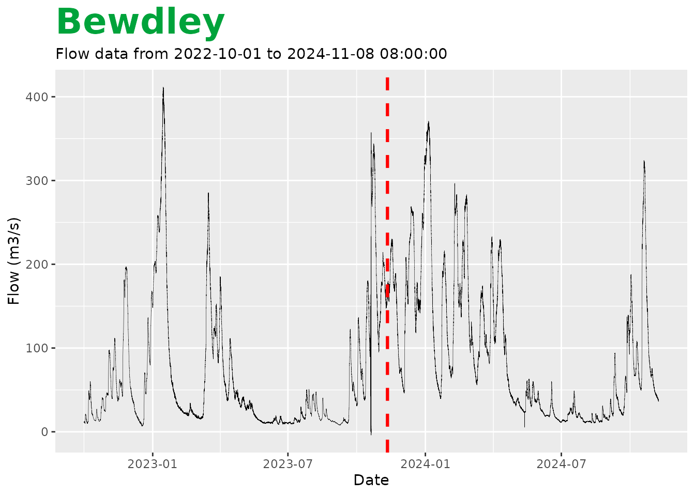

Connecting to realtime data
When connecting to the Hydrology Data Explorer, data are only updated
at set intervals. This can result in a data gap of up to a month. If you
wish to pad out his data, we can connect to the the real time flood data
API. This can be done in the loadAPI() function by adding
the argument rtExt = TRUE.
bewdF <- loadAPI(
ID = "2001",
measure = "flow",
period = 900,
type = "instantaneous",
datapoints = "range",
from = "2022-10-01 00:00",
rtExt = TRUE)
plot <- bewdF$hydroYearDay()$plot(wrap = FALSE)
#> ℹ Calculating hydrological year and day
#> ✔ Calculating hydrological year and day [293ms]
#>
plot + geom_vline(xintercept = bewdF$data$dateTime[39000],
colour = "red",
linewidth = 1.1,
linetype = "dashed")